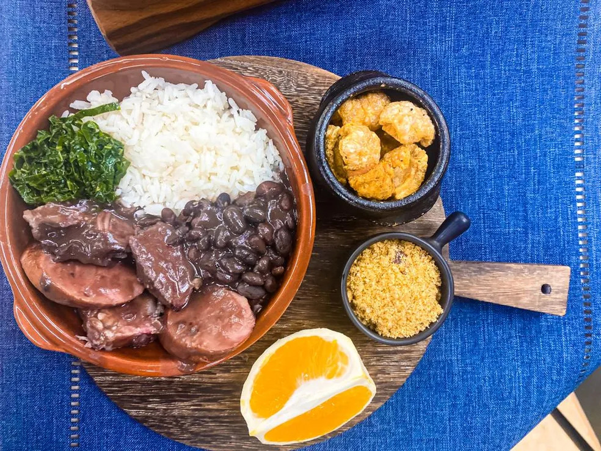
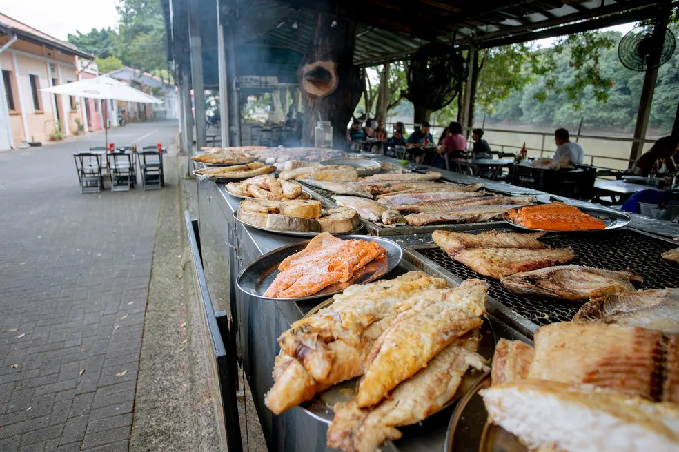
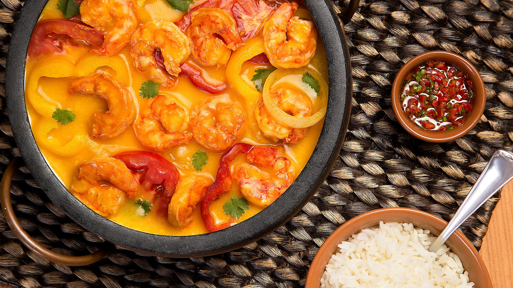

Gastronomia
A Brasil Encantado também se importa com a cultura. Veja aqui os melhores pratos brasileiros e sua história!
Feijoada

Considerada o prato nacional do Brasil, a feijoada consiste em um cozido de feijão preto com diversas partes do porco e carne seca. É tradicionalmente acompanhada por arroz branco, couve refogada, farofa e fatias de laranja.
Embora popularmente associada às senzalas, historiadores indicam que a feijoada é uma adaptação de cozidos europeus, ganhando no Brasil o toque único dos ingredientes locais e tornando-se um símbolo da identidade brasileira.
Acarajé

O acarajé é uma especialidade gastronômica das culinárias africana e afro-brasileira. Trata-se de um bolinho de massa de feijão-fradinho, cebola e sal, frito em azeite de dendê.
No Brasil, é servido partido ao meio e recheado com vatapá, caruru, camarão seco e salada. Mais do que comida, o ofício das Baianas de Acarajé é considerado Patrimônio Cultural Imaterial do Brasil.
Pão de Queijo

O pão de queijo é o embaixador da culinária mineira. Sua receita básica leva polvilho (doce ou azedo), leite, ovos, óleo e muito queijo curado.
Sua origem remonta ao século XVIII em Minas Gerais, quando a farinha de trigo era escassa e o polvilho derivado da mandioca, junto com a abundância de queijo nas fazendas, deu origem a essa iguaria amada em todo o país.
Peixe na Brasa (Estilo Rua do Porto)

A Brasil Encantado tem orgulho em poder se chamar de Piracicabana. Fazendo jûs ao nome, Piracicaba tem os melhores pescados na brasa (como o Lombo de Pintado ou o Pacu) e é uma referência da culinária ribeirinha paulista. Os melhores peixes vem de Água Bonita!
Servido tradicionalmente com cuscuz, arroz e salada, esse prato reflete a cultura dos pescadores do Rio Piracicaba e atrai milhares de turistas gastronômicos todos os finais de semana.
Moqueca Capixaba

A Moqueca Capixaba, originária do Espírito Santo, é um cozido de peixe e frutos do mar que se diferencia pela ausência de azeite de dendê e leite de coco, utilizando urucum para dar cor e sabor.
O segredo está no cozimento lento em panelas de barro de Goiabeiras. Como diz o ditado local: "Moqueca é capixaba, o resto é peixada".